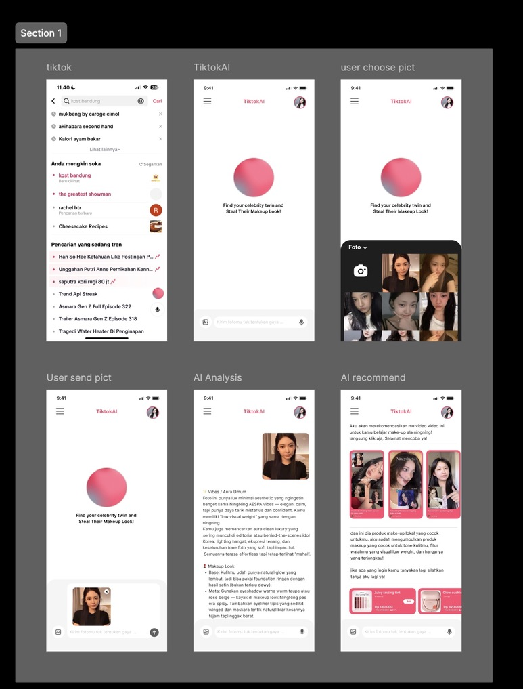

AI Beauty Titkok
Penambahan fitur AI cerdas untuk TikTok yang bertujuan menaikan penjualan di TikTok Shop, sekaligus membantu pengguna menemukan gaya atau jati diri mereka secara lebih personal..

Ringkasan Proyek
Awalnya, saya mengembangkan AI beauty untuk TikTok karena mengamati bahwa banyak perempuan ingin belajar makeup, namun sering kebingungan harus mulai dari mana atau meniru gaya makeup siapa. Dengan teknologi AI yang mampu mendeteksi fitur wajah dan mencocokkan dengan artis yang mirip, pengguna dapat memahami karakteristik wajah mereka dan menyesuaikan gaya makeup sesuai referensi artis tersebut. Selain itu, mengingat perilaku konsumen perempuan yang cenderung mudah terpengaruh rekomendasi produk di TikTok, AI ini juga berpotensi mendukung strategi penjualan melalui platform social commerce secara lebih efektif.
Dampaknya
Fitur ini mengubah keraguan menjadi konversi dengan memberikan rekomendasi produk yang hyper-personalized. Ini bukan hanya tentang membantu pengguna, tetapi menerapkan strategi bisnis yang terbukti: riset dari McKinsey menunjukkan bahwa personalisasi yang efektif dapat meningkatkan pendapatan hingga 40%. Dengan menghubungkan wajah pengguna ke produk yang tepat secara instan, "Tiktok AI" secara strategis memonetisasi fenomena #TikTokMadeMeBuyIt langsung di dalam ekosistem TikTok.
penjelasan Desain
Desain ini mengintegrasikan fitur dengan TikTok sekaligus memberikan pengalaman unik dan fokus. Warna fuchsia menjaga energi brand TikTok, sementara elemen ‘bola AI’ menjadi pusat perhatian yang menarik fokus pengguna. Alur bertahap yang intuitif diakhiri dengan kartu rekomendasi produk, membuat interaksi mudah dan menyenangkan.

Lihat Desain Final
Prototipe interaktif dan seluruh aset desain tersedia untuk dilihat secara lebih detail melalui tautan di bawah ini.
Buka Desain di Figma